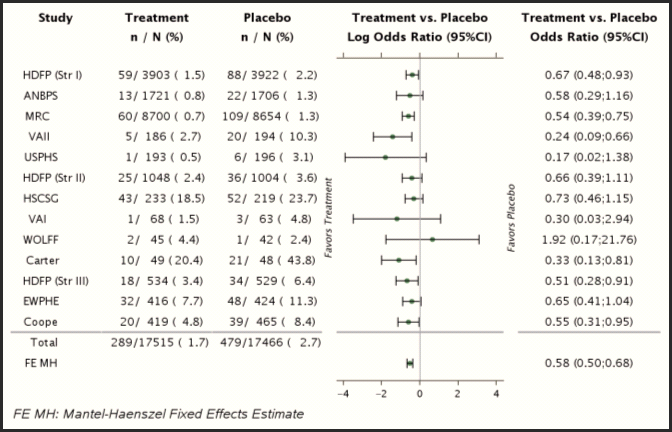

Return to Safety Graphics Home
Type of Graph: Forest Plot
Last updated :
Fabrice Bancken on October 7, 2011 (Work in progress)
Type of data:
Continuous summary data x Categorical data
Type of analysis:
Often used to summarize results of meta-analysis, but can be used in all contexts where a summary measure (point estimate and variability) has to be displayed for different levels of a categorical variable.
Description and purpose:
A Forest Plot consists of a dot plot (a.k.a. symbol and error bar plot) surrounded by one or more text columns. Symobl and error bars represent respectively an estimate and a variability measure (often 95% confidence interval) for each level of a categorical Y variable. These surrounding text columns describe the Y-levels and can be used to provide information to contextualize the estimate.
For example, if a Forest plot is used to summarize meta-analyis results, the Y categorical variable will represent the source under consideration and will take as levels : Study A, Study XYZ, ... The symbol and error bars may represent - regarding an event of interest - the odds ratio (and its 95% confidence interval) obtained in each of these studies. The surrounding columns in that case can provide the number of subjects experiencing the event in each of the treatment and control groups and the number of suvjects at risk in these groups (see Examples below).
While the simple version of the Forest plots will have a unique symbol type and symbol size accross levels of the Y variables, more advanced versions may have - like in bubble plots - the symbol size made proportional to a specific quantity (for example, in a meta-analysis - proportional to the number of subjects used to compute the odds ratio). Again, in meta-analysis, the reader may be interested in distinguishing quickly on the Forest plot between the study-level estimates and the meta-analytic summary. For that purpose, one can use different symbols for these summaries.
Examples:

In this Forest plot, a reference line (corresponding to OR=1) is drawn, separating the graph into two regions, the one where results favor Treatment, and the one where results favor the control group.
Extensions:
Since the key component of a Forest plot is its dot plot (or symbol and error bar plot), one can think of using extensions of the latter to enhance Forest plots. For example, a grouped dot plot could be considered in order to report meta-analysis results performed within subgroups of interest (males, females), or to report meta-analyses with slight differences in the endpoint (sensitivity analyses).
Potential pitfalls:
Balancing clarity and quantity of surrounding text columns
Even if contextual data is important, one has to balance the quantity of information such as to prevent cluttering the graph. Indeed, an increasing number of text columns around the 'symbol and error bar' plot decreases the amount of space for the latter.
For Forest Plot extensions such as the grouped Forest plot (e.g., study-level and meta-analysis results reported on the same graph for males and females), the use of the surrounding text columns becomes very limited, given space limitations.
Results not defined
As for all other plots in which some results may not be defined (division by zero when considering ratios), the boundary cases should be handled appropriately, for example using specific symbols or annotations on the graph representing cases of 0/0 events, 0/>0 events in log-scale and >0/0 events.
Reference:
Code ( ):
%CODE{lang="java"}%
%ENDCODE%